原视频：Bilibili · BV18fcozAEsy 课程：NJU《操作系统原理》2026 第 3 讲 整理说明：本书由视频语音转录后经 AI 重构而成，口语已转写为书面语；关键时间点均标注 (参考时间)，截图卡片可跳转视频对应位置。
1. 用 AI 补齐动手能力
(参考时间: 00:00)
本讲从应用视角的操作系统（一组 API）转向硬件视角。开课前先示范：觉得「下载课程示例代码很麻烦」时，可以问 AI「如果你是这个领域的专家，你会怎么做」——主讲人称之为改变世界的 prompt（用专家视角引导 AI 给出方法）。
AI 会调用 curl 抓取网页、识别目录结构、用 wget -R 递归下载，做错还会自查重做。观察这一过程本身就是学习：你知道了工具存在，再追问原理。
两种学习方式
- 主动：每一步追问「为什么用这个工具、原理是什么」；
- 被动：让 AI 监控你的操作，每隔几分钟问「刚才我在做什么？如果是专家会怎么做」。
AI 时代人与人之间的工作效率与学习效率可能相差十倍、百倍甚至千倍。
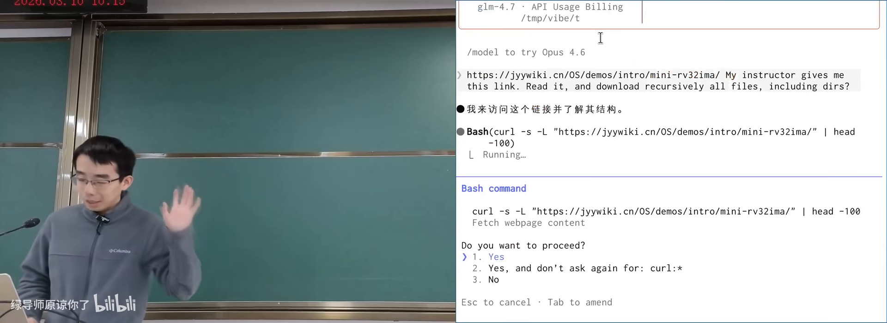
AI 下载课程代码：专家式提问在 B 站打开 (00:04:20)
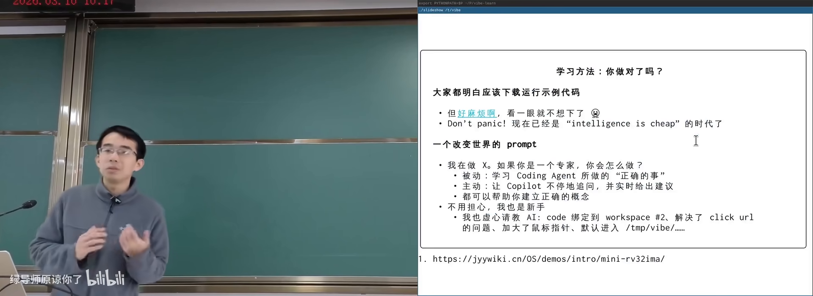
主动学习：追问工具原理在 B 站打开 (00:06:40)
2. 抽象层：硬件并不知道操作系统
(参考时间: 00:09)
回顾应用视角：.c 是状态机 → 编译成 a.out（指令状态机）→ 运行在操作系统上 → 操作系统运行在硬件上。a.out 里的进程本身也是操作系统中的对象。
程序有一条特殊指令 系统调用（程序把控制权交给操作系统、请求服务的指令），如同全身麻醉：失去意识，醒来时请求可能已完成。
硬件视角一句话
硬件根本不知道有没有操作系统，也不知道上面跑的是什么。 它只是无情的执行指令的机器：看见什么指令就执行什么。
写 NEMU 模拟器时用的就是这个模型：ADD、MOV、INT、IN/OUT 按手册做状态迁移。INT/in/out 等指令常被用来实现操作系统，但硬件并不禁止你跑一个不是 OS 的程序。
什么是抽象
抽象（隔离上下两层复杂性的中间接口）：上层很复杂，下层也很复杂，中间接口保持简单。
系统调用是典型抽象：应用通过 read/write 等少量 API 即可支撑整个应用生态；底层为画一个像素要驱动显卡、走线到显示器，应用完全不必知道。反过来，操作系统也不关心上面是 Android、云服务还是树莓派。
指令集（ISA）同样是抽象：向上是 OS 与全部应用，向下是乱序执行、数据流分析、多发射等复杂硬件。
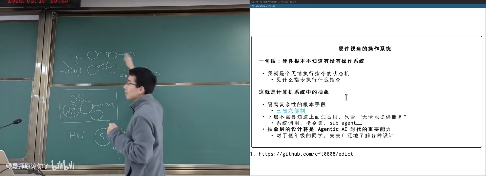
抽象层：复杂上下层之间的简单接口在 B 站打开 (00:14:40)
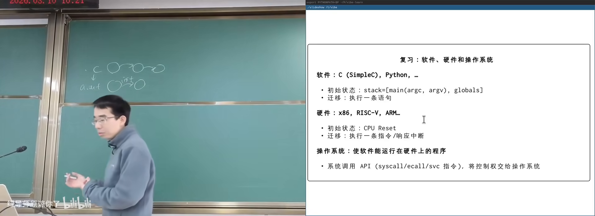
应用视角回顾：a.out 运行在 OS 上在 B 站打开 (00:10:00)
printf 有时输出到屏幕、有时到文件，代码完全相同——因为 write 的文件描述符（指向操作系统对象的整数编号） 可以指向不同对象。抽象层设计在 Agentic AI 时代可能是重要产品能力。
3. 计算机系统的状态与迁移
(参考时间: 00:20)
计算机系统 = 状态机：
- 状态：内存与寄存器的数值；
- 初始状态：CPU reset 后由设计者规定（如 PC = 特定地址）；
- 迁移：从 PC 取指 → 译码 → 按手册执行。
系统内状态与系统外状态
内存、CPU 插在主板上，主板处在物理世界中。因此状态还包括：
- 系统内：寄存器、内存；
- 系统外：传感器、摄像头、网络等物理设备。
in 指令从外部读入（如摄像头像素写入 AX）；out 把电平送到外部。任天堂「打鸭子」的光枪就是一个像素的摄像机：开枪后屏幕闪一白一黑，命中则相机检测到该序列。
树莓派上的 GPIO（通用输入输出引脚，可用程序控制电平高低）：gpio set value 23 即可拉高/拉低 23 号引脚；接上 LED 即可闪烁。一行 C 代码就能与物理世界交互。
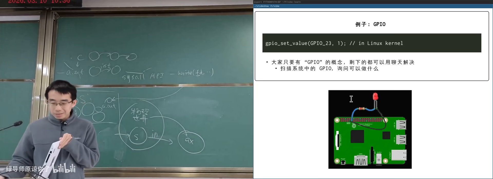
树莓派 GPIO：程序控制物理引脚在 B 站打开 (00:24:50)
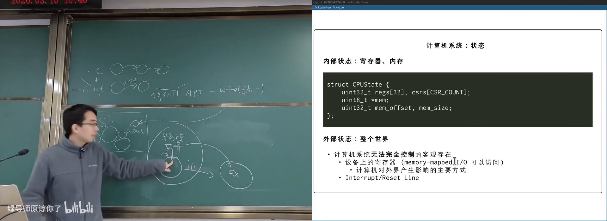
中断：死循环为何不毁掉系统在 B 站打开 (00:29:00)
中断：死循环为何不会毁掉系统
中断（外部设备通过专门线路通知 CPU「有事发生」的机制）：时钟、键盘、网卡都可以拉中断线。信号到来时，CPU 会强行跳转到中断处理程序，无论当前在执行什么（除非中断被屏蔽）。
应用程序不能关中断——试用内联汇编关中断会得到段错误。只有操作系统代码有权限关中断；若 OS 在关中断时出 bug 死循环，系统才会真正死机。中断机制赋予了操作系统「霸主地位」。
flowchart LR
A[应用程序运行中] --> B{中断线信号?}
B -->|否| A
B -->|是| C[CPU 强制跳转<br>操作系统中断处理]
C --> D[处理完毕<br>恢复应用或切换进程]
4. CPU Reset、固件与启动
(参考时间: 00:33)
Reset 后许多寄存器未定义（省电路），通常中断处于关闭状态；PC 会被规定成确定值。内存条是易失性存储（掉电即丢数据），冷启动时内存里不能指望有合法指令。
固件
答案是主板厂商把一段 ROM/闪存 内存映射到 reset 后 PC 所指的地址空间。这段代码出生就拥有完整机器控制权，称为 固件（厂商固定在硬件中、复位后最先执行的代码），旧称 BIOS，现代多为 UEFI。
固件职责：
- 扫描、初始化、配置硬件（时钟、CPU 核、风扇等）；
- 可弹出启动菜单（双系统选择）；
- 把磁盘/网络上的操作系统加载到内存；
- 释放自己占用的资源，跳转到 OS 入口。
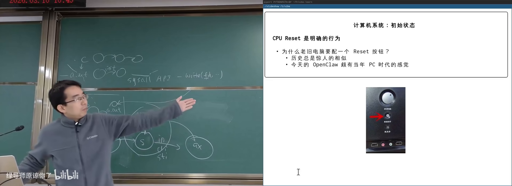
固件配置界面：BIOS/UEFI在 B 站打开 (00:33:20)
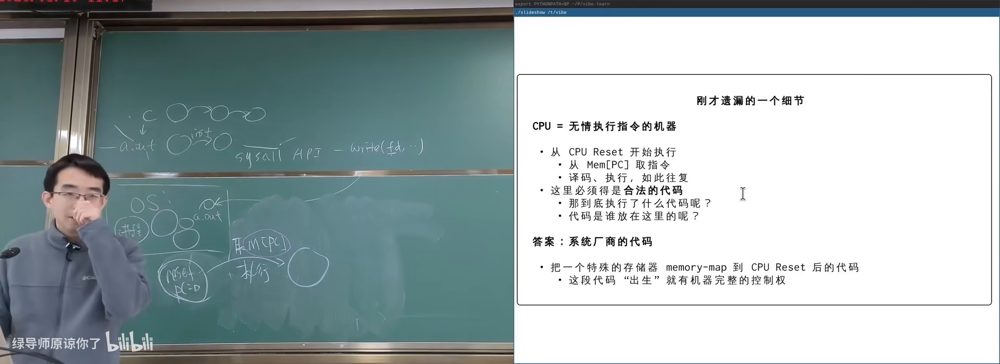
CPU reset 后第一条指令从哪来在 B 站打开 (00:53:50)
早期 DOS 时代固件常驻内存，应用通过 int 0x10 等中断向量调用固件服务（画点、读盘）。现代 OS 自己驱动设备；固件还要处理指纹锁、USB 扩展坞、网络启动等复杂硬件。
固件曾是纯 ROM，后来变为可编程 ROM：厂商发软盘/补丁更新。写保护平时打开；更新时需向总线写入特定序列解锁——更新失败机器会「变砖」。
UEFI（统一可扩展固件接口）本身像一个编程框架：FAT 分区里可放驱动与引导加载器。
5. 多处理器与操作系统的角色
(参考时间: 00:45)
多处理器模型
概念上很简单：
- 每个 CPU 有自己独立的寄存器；
- 它们共享内存（shared memory；大核小核访存延迟可能不同 → NUMA）。
状态迁移变成：任选一个 CPU 执行一条指令；任一 CPU 都可能响应中断。因此多处理器上的程序运行多次结果可能不同——强大也带来了理解上的困难。
操作系统启动后是什么
硬件视角下 OS 只是普通程序：初始化日志、Windows 的转圈圈结束后，操作系统变成：
- 中断处理程序；
- 系统调用服务程序。
它常驻内存，但一般不在 CPU 上执行——只有中断到来或程序发起系统调用时，OS 代码才运行。它是服务提供者，并创建出应用世界。
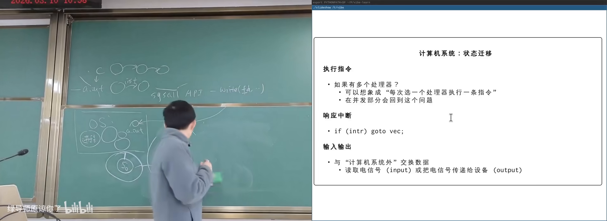
多核 CPU：独立寄存器 + 共享内存在 B 站打开 (00:46:40)
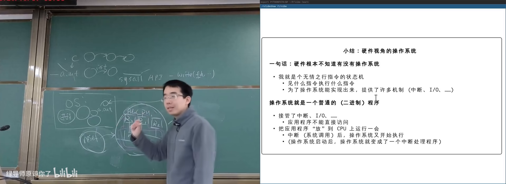
OS 启动后：中断与系统调用的服务者在 B 站打开 (00:51:30)
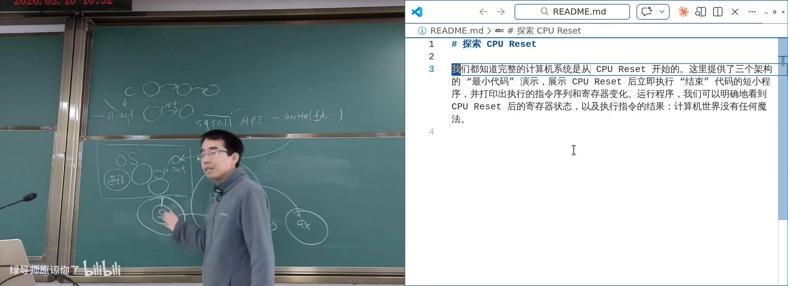
现场 AI 写 RISC-V 最小启动代码在 B 站打开 (00:40:40)
用 AI 验证硬件概念
主讲人让 coding agent 编写 RISC-V/ARM 的最小启动代码：在模拟器中观察 reset 后寄存器现场，执行 ecall/svc。概念（reset、ISA、抽象层）比死记手册细节更重要；细节可以随时问 AI，甚至把手册丢进上下文。
改变世界的 prompt 依然有效：相信任务能完成，并能说清楚要什么。
附录：概念补给
抽象层
- 是什么：隔开上下两层复杂性的中间接口。
- 课上为何出现：系统调用、指令集都是抽象；硬件不知道 OS。
- 和什么像：你按电梯按钮，不必知道曳引机怎么工作。
GPIO
- 是什么：可用程序控制电平高低的通用引脚。
- 课上为何出现：说明计算机通过「线」与物理世界相连。
- 和什么像：可编程的电源开关排插。
中断（Interrupt）
- 是什么：外部或内部事件通知 CPU 暂停当前工作并处理该事件。
- 课上为何出现：死循环不卡死整机；OS 的霸主地位。
- 常见误解：应用程序不能随便关中断，否则可能段错误。
CPU Reset
- 是什么：硬件复位信号，使 CPU 进入手册规定的初始状态。
- 课上为何出现：完整计算机系统的起点。
- 和什么像：游戏机电源键重开，存档点回到关卡起点。
固件（Firmware）/ BIOS / UEFI
- 是什么：固化在硬件中、reset 后最先执行的代码。
- 课上为何出现：初始化硬件并加载操作系统。
- 常见误解：BIOS 是历史名称；现代多用 UEFI，二者常被混称。
易失性存储（Volatile Memory）
- 是什么：掉电后数据丢失的存储器（如 DRAM 内存条）。
- 课上为何出现：解释 reset 后内存里为何不能直接有合法代码。
- 和什么像：黑板上的字，断电（擦黑板）就没了。
指令集体系结构（ISA）
- 是什么：硬件对外提供的指令集合与行为规范。
- 课上为何出现：硬件视角的抽象层；模拟器按 spec 实现。
- 和什么像：电器说明书上的操作菜单。
内存映射（Memory-Mapped）
- 是什么：把设备/ROM 等映射到地址空间，用访存指令即可访问。
- 课上为何出现：固件如何出现在 reset 后的 PC 地址上。
- 和什么像：把校外实验室登记成校内房间号。
段错误（Segmentation Fault）
- 是什么：访问非法地址时进程被强制终止。
- 课上为何出现：用户态关中断等非法操作的可能后果。
NUMA / 共享内存多核
- 是什么：多核共享内存，但不同核访问不同内存区域延迟不同。
- 课上为何出现：现代手机/电脑都是多处理器系统。
- 常见误解：「共享内存」不等于所有访存速度相同。
内联汇编（Inline Assembly）
- 是什么：在 C 代码中嵌入汇编指令片段的机制。
- 课上为何出现：演示关中断等底层操作；AI 也能写好。
- 和什么像：在中文作文里夹一段机器码。
改变世界的 prompt
- 是什么：「如果你是这个领域的专家，你会怎么做？」
- 课上为何出现：AI 时代通用的学习与执行策略。
- 和什么像：先问老师傅的套路，再自己动手。
书架 Shelf 流水线生成 · 内容衍生自 B 站公开课程视频 BV18fcozAEsy